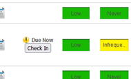

Release Notes for Health & Safety (OES and Case Manager) v1.8.32
Release Date: 1/26/2022
Newly-Available Customer Options/Functionality
MyTeam tab of the dashboard can now include periodic check in option. The MyTeam tab gives supervisors/managers the ability to stay in touch with the ergonomics of people who report to them. This feature adds the ability to track periodic check-ins with employees to ensure regular communication occurs. It can apply to the entire organization, or a subset based on risk, discomfort, or an HR attribute.
When a supervisor visits their MyTeam tab, employees who report to them and who are included in the "check in" system will have a check-in status item. It will either let the supervisor know when they next need to check in, that they currently need to check in, or that they are overdue for check-in. For the latter two, the supervisor will see a check-in button that they can click to indicate that they have completed the periodic check-in. MyTeam will then show when the next check-in is due. (Cority ticket ID HS-6909)

Improvements
Accessibility Improvements. An additional correction was made to the dashboard to achieve Cority’s accessibility goals and to be compliant with WCAG. (Cority ticket ID HS-7018)
Corrected Bugs
A problem existed that prevented sending emails from the Progress Report in some cases. This is been corrected. (Cority ticket ID HS-6942)
Corrected issue where the Last Training Date sometimes did not update correctly.(Cority ticket ID HS-6974)
For users in some time zones, the Desktop Summary RSIGuard usage graphs could show data where the date range was shifted back by one day. Corrected.(Cority ticket ID HS-7003)
Corrected back-end tool for editing roles in OES.(Cority ticket ID HS-7026)